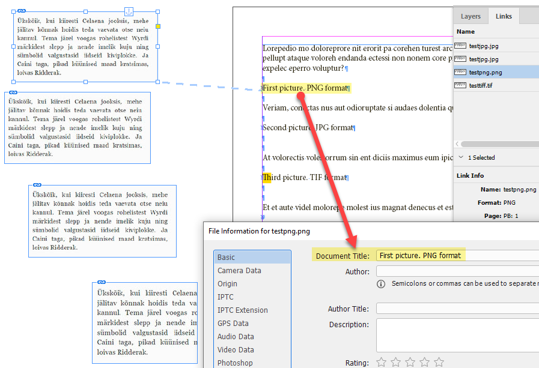

Writing info to link’s metadata in InDesign
Part 1
At first glance, this may seem impossible: all the properties in the linkXmp (LinkMetadata) are read-only. If we open the XMP File info dialog from the Links panel, we can read it but can’t change it.
Applying metadata via the AdobeXMPScript library directly from InDesign is problematic because of the bug in the recent version. (I wonder if it has been in the latest version of InDesign 2023).
A client asked me to write a script where the content of a paragraph goes to the document title metadata field:
“What I need is tool, that copy all the text from the paragraph where picture is linked and paste that text to the picture file metadata filed.
Picture is always anchored to the beginning of the paragraph. If there is another object anchored to the end of same paragraph, it should be ignored.
If the picture is linked to empty paragraph some default text will be used to fill that alt tag.
I can change that default text by modifying the script, there is no need for dialog box for that.”

Here I found a solution. This script requires both InDesign and Bridge.
Run it in InDesign. The script collects the list of image links and the corresponding paragraph content to which the image is anchored. Then it sends the list to Bridge — via BridgeTalk — where the paragraph content is added to the document title metadata field.
I wrote it in InDesign 2022 (17.2.1) and Bridge 12.0.0.234 for Windows.
This script also illustrates how to:
- send an array as a parameter via BridgeTalk
- return an error message from BridgeTalk
- check if the Bridge app is installed and running
Click here to download the script.
Part 2
I asked a question on the Adobe InDesign forum, and it turned out that the bug was fixed in version 17.4.0.51. Also, it’s OK with the latest (at the moment) version of InDesign 2023: 18.0.0.312. I wrote another script using a more elegant approach: the AdobeXMPScript library is called directly from InDesign so no Bridge is needed.
Here’s the new version of the script.